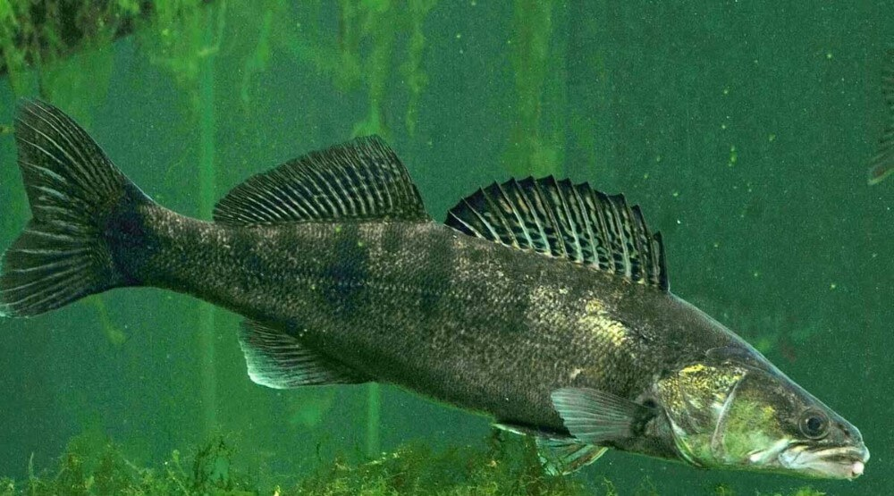
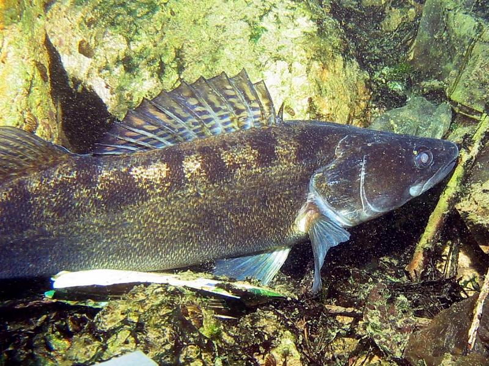
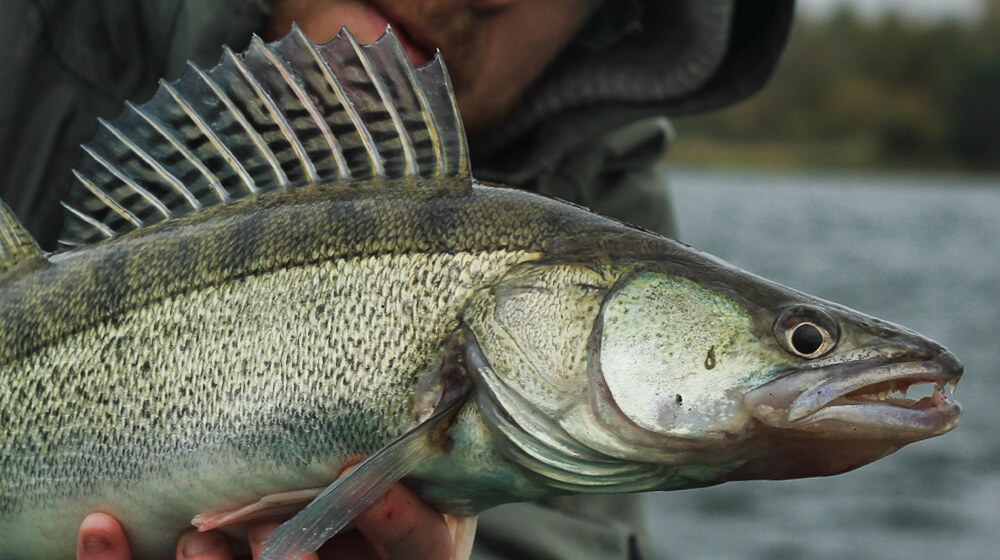

Sandacz (Sander lucioperca) to ryba z rodziny okoniowatych, z rzędu okoniokształtnych, większa od okonia  europejskiego. Ma wrzecionowate ciało, lekko wygrzbiecone, z długim, szpiczastym pyskiem. Ciało pokryte jest drobnymi i szorstkimi łuskami. Otwór gębowy osadzony jest końcowo. Ryba ta jest wyposażona w zęby. Na grzbiecie znajdują się dwie płetwy. Pierwsza ma twarde promienie, druga miękkie. Grzbiet jest ciemniejszy od reszty ciała. Boki są szaro-zielonkawe ze złocistym połyskiem z 8-12 ciemniejszymi smugami. Płetwy są jasne. Na płetwach grzbietowych i ogonowej znajdują się ciemne plamki. W Polsce najczęściej spotykane osobniki mierzą 40-70 cm długości.
Występowanie i środowisko
To ryba europejska. Nie występuje na Półwyspie Iberyjskim, Bałkańskim i Apenińskim. Lubi przebywać w dużych rzekach o wolnym nurcie. Preferuje także starorzecza i jeziora. Sandacza można także spotkać w Bałtyku. To ryba wymagająca co do zawartości tlenu w wodzie. Jest przez to wrażliwa na zanieczyszczenia.
Tryb życia i zachowanie
Sandacz żyje maksymalnie 16 lat. Dzięki ochronnemu ubarwieniu ciała sandacze świetnie się maskują w otoczeniu.
Pożywienie
To drapieżnik. Młode osobniki zjadają plankton i wodne bezkręgowce, większe ryby polują na inne ryby, takie jak stynki, okonie, płocie, jazgarze, leszcze, kiełbie. Sandacz przejawia także kanibalizm. Zdarza się, że poluje na skorupiaki i mięczaki.
Rozmnażanie
W Polsce sandacz rozmnaża się od trzeciej dekady kwietnia do połowy czerwca. Tarło ma miejsce w płytkich zbiornikach o twardym, piaszczystym lub kamienistym dnie. Samiec buduje gniazdo w postaci wgniecenia w podłożu i po złożeniu przez samicy ikry, strzeże jaj aż do momentu wyklucia się młodych. Samica składa 200-300 tysięcy jaj (maksymalnie nawet milion). Ikra lepi się i ma żółty kolor. Tarło odbywa się w parach. Z jaj już po kilku dniach wykluwają się młode. Młode samce stają się dojrzale płciowo po 2-3 latach, samice po 3-4 latach.
Ciekawostki
To ryba o dużym znaczeniu gospodarczym. Jej mięso jest wyjątkowo smaczne. Jest obiektem połowów sportowych. Prowadzi się jej hodowlę, a zbiorniki wodne sztucznie się zarybia. To nasz największy gatunek z rodziny okoniowatych.
Okres ochronny: od 1 stycznia do 31 maja
Wymiar ochronny: 50 cm
Dobowy limit połowu: 2 szt. razem z boleniem, karpiem, lipieniem, amurem, pstrągiem potokowym, szczupakiem, brzaną.
Rekord Polski: 15,60 kg 108 cm